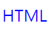
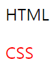
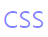
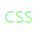

#3 텍스트 관련 스타일 vol1 _ color : 글자 색 변경하기
[목차]
1. color 속성
2. 영문명 표기법
3. 16진수 표기법
4. hsl / hsla 표기법
5. rgb / rgba 표기법
*개인적인 공부 기록용으로 작성한 글이기에, 잘못된 내용이 있을 수 있습니다.
#1 color 속성
웹 브라우저에서, 텍스트의 글자색을 바꿀 때 color 속성을 사용합니다.
color를 사용할 수 있는 속성값은 ①영문명 ②16진수 ③hsl/hsla ④rgb/rgba 로 총 4가지 방식으로 나뉩니다.
[기본형] color : <색상>#2 영문명 표기법
영문명 표기법이란, 글자의 색상을 red, yellow, white, black, blue 등과 같이 잘 알려진 색상 이름을 사용해 표기하는 방식 입니다.
다음은 영문명 표기를 이용해, 글자색을 파란색으로 지정하는 예제입니다.
<!DOCTYPE html>
<html lang="ko">
<head>
<meta charset="UTF-8">
<title>EX2</title>
<style>
.changeColor{
color: blue;
}
</style>
</head>
<body>
<p class = "changeColor">HTML</p>
</body>
</html>
#3 16진수 표기법
16진수 표기법이란, 포토샵과 같은 그래픽 프로그램과 같이 6자리의 16진수로 표현하는 방식입니다.
앞에서 부터 두자리 씩 #RRGGBB로 표시하며, RR은 빨간색 GG는 초록색 BB는 파란색을 의미합니다.
예를들어 #000000은 하나도 섞이지 않았으니, 검은색을 의미하며, #ffffff는 흰색을 의미합니다.
다음은 16진수 표기를 이용한 예제입니다.
<!DOCTYPE html>
<html lang="ko">
<head>
<meta charset="UTF-8">
<title>EX2</title>
<style>
.changeBlack{
color: #000000;
}
.changeRed{
color: #ff0000;
}
</style>
</head>
<body>
<p class = "changeBlack">HTML</p>
<p class = "changeRed">CSS</p>
</body>
</html>
#4 hsl / hsla 표기법
hsl이란, hue(색상), saturation(채도), lightness(명도)의 줄임말이며, hsla는 hsl에서 alpah(불투명도)를 추가한 것 입니다.
각도를 기준으로 0도,360도 에는 빨간색 120도에는 초록색 240도에는 파란색이 배치됩니다.
채도와 명도는 퍼센트(%)로 표시하며, 채도에서 0%는 회색 100%는 원래 색이고, 명도는 0%는 가장 어두움 50%는 원래 색 100%는 흰색을 의미합니다.
예를 들어서, hsla(240, 100%, 50%, 0.5) 라고 작성하면 반쯤 투명한 파란색이 출력됩니다.
<!DOCTYPE html>
<html lang="ko">
<head>
<meta charset="UTF-8">
<title>EX2</title>
<style>
.changeColor{
color: hsla(240, 100%, 50%, 0.5);
}
</style>
</head>
<body>
<p class = "changeColor">CSS</p>
</body>
</html>

#5 rgb / rgba 표기법
rgb/rgba 표기법은 웹 문서의 색상을 지정할 때 가장 많이 사용하는 방식입니다.
rgb는 red, green, blue 의 줄임 말이며, 각각의 색상에 0~255의 값을 대입해 섞어서 사용합니다.
rgb 표기법으로 초록색을 나타내고 싶다면, rgb(0, 255, 0) 과 같이 지정하면 됩니다.
또한, hsla와 마찬가지로 rgba의 a는 alpha 불투명도를 나타내는데, 0~1사이의 값을 입력합니다.
다음은 rgba 표기법을 이용하여 반쯤 투명한 초록색을 출력한 예시입니다.
<!DOCTYPE html>
<html lang="ko">
<head>
<meta charset="UTF-8">
<title>EX2</title>
<style>
.changeColor{
color: rgba(0, 255, 0, 0.5);
}
</style>
</head>
<body>
<p class = "changeColor">CSS</p>
</body>
</html>
